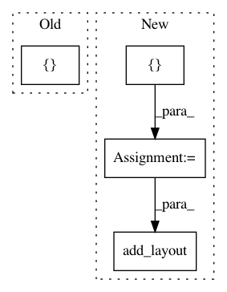

2f045e23607f4660d3920d6a91e322311516d6d6,examples/plotting/file/unemployment.py,,,#,8
Before Change
data["Year"] = [str(x) for x in data["Year"]]
years = list(data["Year"])
months = ["Jan", "Feb", "Mar", "Apr", "May", "Jun", "Jul", "Aug", "Sep", "Oct", "Nov", "Dec"]
data = data.set_index("Year")
// this is the colormap from the original NYTimes plot
After Change
months = list(data.columns)
// reshape to 1D array or rates with a month and year for each row.
df = pd.DataFrame(data.stack(), columns=["rate"]).reset_index()
// this is the colormap from the original NYTimes plot
colors = ["/�f", "//a5bab7", "//c9d9d3", "//e2e2e2", "//dfccce", "//ddb7b1", "//cc7878", "/묽b41", "/릾b1d"]
mapper = LinearColorMapper(palette=colors, low=df.rate.min(), high=df.rate.max())
source = ColumnDataSource(df)
TOOLS = "hover,save,pan,box_zoom,reset,wheel_zoom"
p = figure(title="US Unemployment ({0} - {1})".format(years[0], years[-1]),
x_range=years, y_range=list(reversed(months)),
x_axis_location="above", plot_width=900, plot_height=400,
tools=TOOLS, toolbar_location="below")
p.grid.grid_line_color = None
p.axis.axis_line_color = None
p.axis.major_tick_line_color = None
p.axis.major_label_text_font_size = "5pt"
p.axis.major_label_standoff = 0
p.xaxis.major_label_orientation = pi / 3
p.rect(x="Year", y="Month", width=1, height=1,
source=source,
fill_color={"field": "rate", "transform": mapper},
line_color=None)
color_bar = ColorBar(color_mapper=mapper, major_label_text_font_size="5pt",
ticker=BasicTicker(desired_num_ticks=len(colors)),
location=(0, 0))
p.add_layout(color_bar, "right")
p.select_one(HoverTool).tooltips = [
("date", "@Month @Year"),
("rate", "@rate"),
In pattern: SUPERPATTERN
Frequency: 3
Non-data size: 4
Instances
Project Name: bokeh/bokeh
Commit Name: 2f045e23607f4660d3920d6a91e322311516d6d6
Time: 2017-03-29
Author: jsignell@gmail.com
File Name: examples/plotting/file/unemployment.py
Class Name:
Method Name:
Project Name: bokeh/bokeh
Commit Name: 1c0433bcd6928e55ee70e582fd538c3bc854d04e
Time: 2017-01-09
Author: bryanv@continuum.io
File Name: examples/embed/widget.py
Class Name:
Method Name: population
Project Name: bokeh/bokeh
Commit Name: 1c0433bcd6928e55ee70e582fd538c3bc854d04e
Time: 2017-01-09
Author: bryanv@continuum.io
File Name: examples/models/population_server.py
Class Name:
Method Name: population